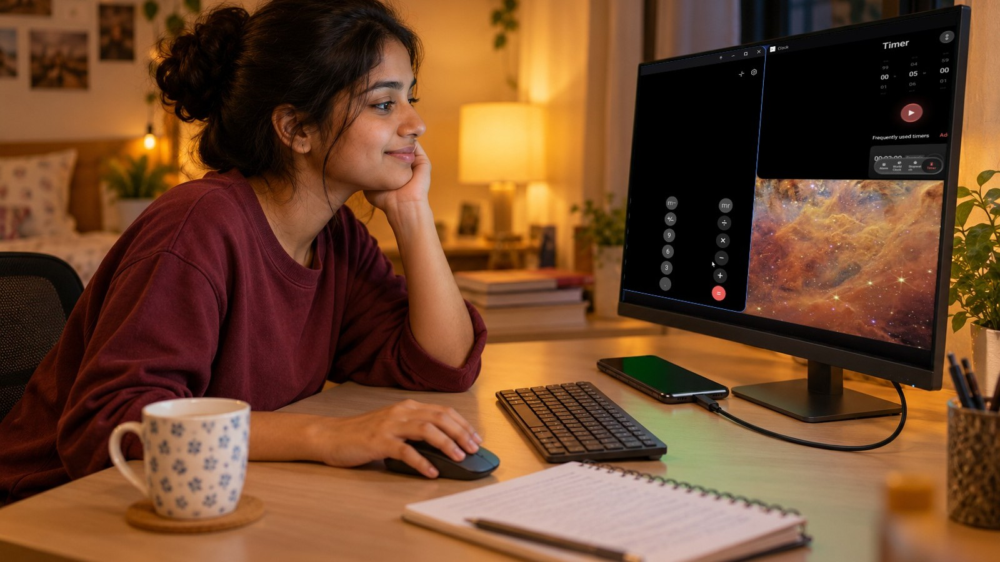
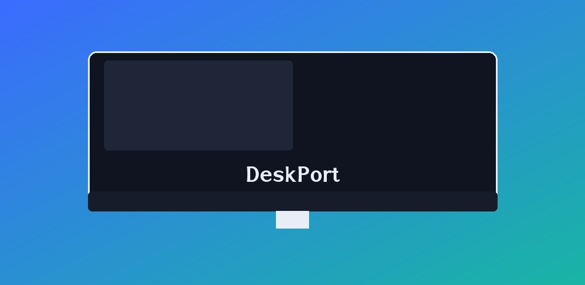

Your phone, now a desktop.
Plug a monitor or TV into your phone over USB-C and get a real desktop with floating windows, a taskbar and a start menu. Your phone stays free as a touchpad and keyboard.
Works even on phones whose system only mirrors the screen, like many vivo, iQOO, Xiaomi, Redmi, POCO, OPPO, realme, OnePlus, Nothing, Tecno and Infinix models. No root needed.
Get it on Google PlaySupport & FAQ
- No ads
- No account
- No root
- One-time Pro
What you get
- A real second desktopThe monitor shows its own desktop at its native resolution. It is not a mirror.
- Floating windowsResizable windows with snap, maximize and minimize. Run several apps side by side.
- Taskbar and start menuLaunch and switch apps with search, like you do on a PC.
- Phone as touchpadYour phone screen becomes a touchpad and keyboard while the monitor shows the desktop.
- Mouse and keyboardUSB and Bluetooth mice and keyboards work too.
- Lock coverThe monitor is covered when your phone locks, so nothing private stays on show.

How it works
- Install ShizukuA free, open-source helper from Google Play. DeskPort uses it to launch apps on the external display.
- Start it onceTurn on Developer options and Wireless debugging, then start Shizuku. The setup helper in DeskPort guides you.
- Plug in and goConnect your monitor or TV with USB-C and open DeskPort. After a phone restart, open Shizuku and tap Start again.
Requirements
- A phone with USB-C video output (DisplayPort over USB-C). DeskPort checks this first, so you know before you set anything up.
- The free Shizuku app, set up with Wireless debugging.
- Android 14 or newer.
- A monitor or TV, and a USB-C to USB-C cable or a USB-C to HDMI or DisplayPort adapter that supports video.
Free and Pro
Pro is a one-time purchase through Google Play. No subscription, no ads in either version.
| Feature | Free | Pro |
|---|---|---|
| Separate desktop, touchpad, taskbar, start menu | Yes | Yes |
| 7-day free trial of Pro | n/a | Starts when you first connect a monitor |
| Floating windows | 2 at a time | Up to 6 |
| Snap layouts and per-app window memory | Basic left and right snap | Full layouts, remembers size and position |
| Themes, wallpapers, icon styles | Dark theme, 4 wallpapers, original icons | All |
| Multiple virtual desktops | No | Yes |
| Shortcut editor | Defaults | Full |
| Presenter tools | Next and previous | Laser pointer and timer too |
| Notification centre on the monitor (optional) | Last 3 | Full notification centre, all, with pop-ups |
| Ads | None | None |
Questions
Does DeskPort need root?
No. No root, no unlocked bootloader and no custom ROM.
Which phones work?
Phones with USB-C video output (DisplayPort over USB-C) work, including phones whose system only mirrors the screen, such as many vivo, iQOO, Xiaomi, Redmi, POCO, OPPO, realme, OnePlus, Nothing, Tecno and Infinix models. DeskPort checks compatibility first.
What is Shizuku, and is it safe?
Shizuku is a free, open-source app that lets other apps use limited system features after you approve them. DeskPort uses it to start apps on the external display. It only grants access to apps you allow, and you can revoke access any time in Shizuku.
Why does video not play in some apps?
Some apps, such as certain streaming apps, use DRM protection and may not play video inside windows. This is a limit set by those apps, not by DeskPort.
Read all questions and troubleshooting
Private by design
No account, no ads and no personal data collected. Your settings stay on your phone. The optional notification centre is processed on your device only. Read the privacy policy.